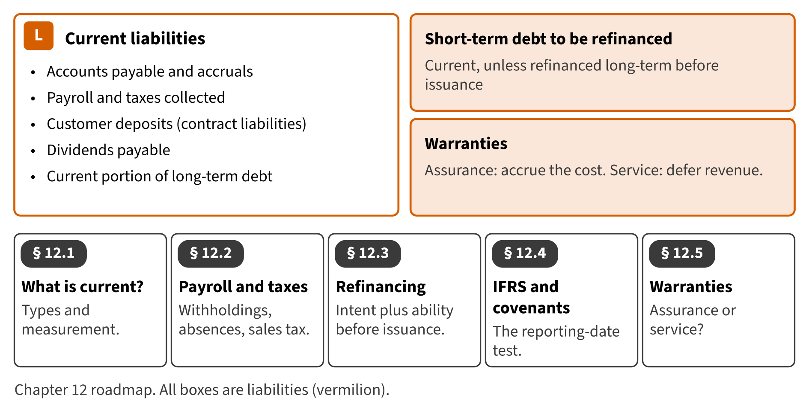

Part I · Foundations and the four financial statements · Chapter 12
Current Liabilities and Warranties
الالتزامات المتداولة والضمانات
Chapter 2 showed where current liabilities appear on the balance sheet. This chapter looks inside them. It explains the everyday liabilities, such as payroll and taxes collected, and two topics that the exam tests often: short-term debt that will be refinanced, and warranties.

Start here
Then
What this chapter is tested on
| LOS | Official statement (ICMA, 2024) | In plain words | Depth here |
|---|---|---|---|
| A.1.c | identify the major components and classifications of each statement | Identify and measure the common current liabilities, including payroll and taxes collected. | Deepens Chapter 2 |
| A.2.o | identify the classification issues of short-term debt expected to be refinanced | Identify when short-term debt expected to be refinanced may be shown as noncurrent. | Full treatment |
| A.2.p | compare the effect on financial statements when using either the assurance warranty approach or the service warranty approach for accounting for warranties | Compare assurance-type and service-type warranties and account for each. | Full treatment |
| A.2.ff | identify and describe the following differences between U.S. GAAP and IFRS: (i) expense recognition, with respect to share-based payments and employee benefits; (ii) intangible assets, with respect to development costs and revaluation; (iii) inventories, with respect to costing methods, valuation, and write-downs (e.g., LIFO); (iv) leases, with respect to lessee operating and finance leases; (v) long-lived assets, with respect to revaluation, depreciation, and capitalization of borrowing costs; and (vi) impairment of assets, with respect to determination, calculation, and reversal of loss | Contrast the IFRS classification and provision rules. | Preview (full in Chapter 17) |
The official statements are quoted from the ICMA Learning Outcome Statements (effective September 1, 2024). The plain-words column restates them in simpler English. The exam may test any outcome up to Level C.
What you already know
IFRS readers know warranty provisions under IAS 37 and the right-to-defer test of IAS 1. U.S. GAAP reaches different answers in two places: refinancing after year-end, and the meaning of probable. Watch for both.
The 8 key terms
Every scene has Check Answers and Try Again. Try Again reshuffles rather than revealing. When you are wrong, the first thing you read is the reason for the option you chose, taken from the book's own explanations. Progress is saved in this browser.